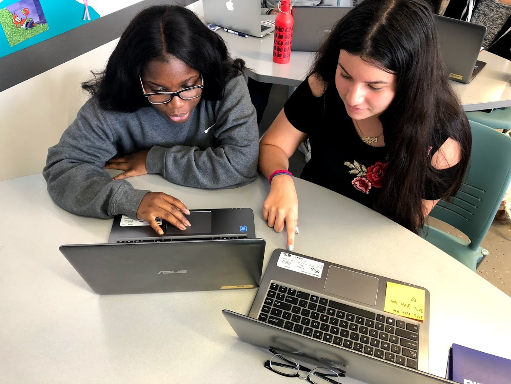
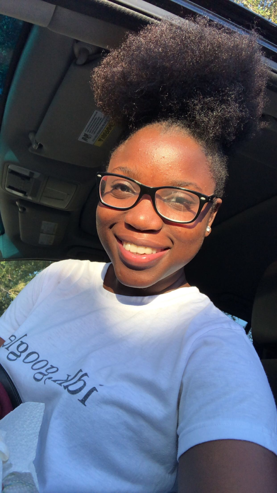
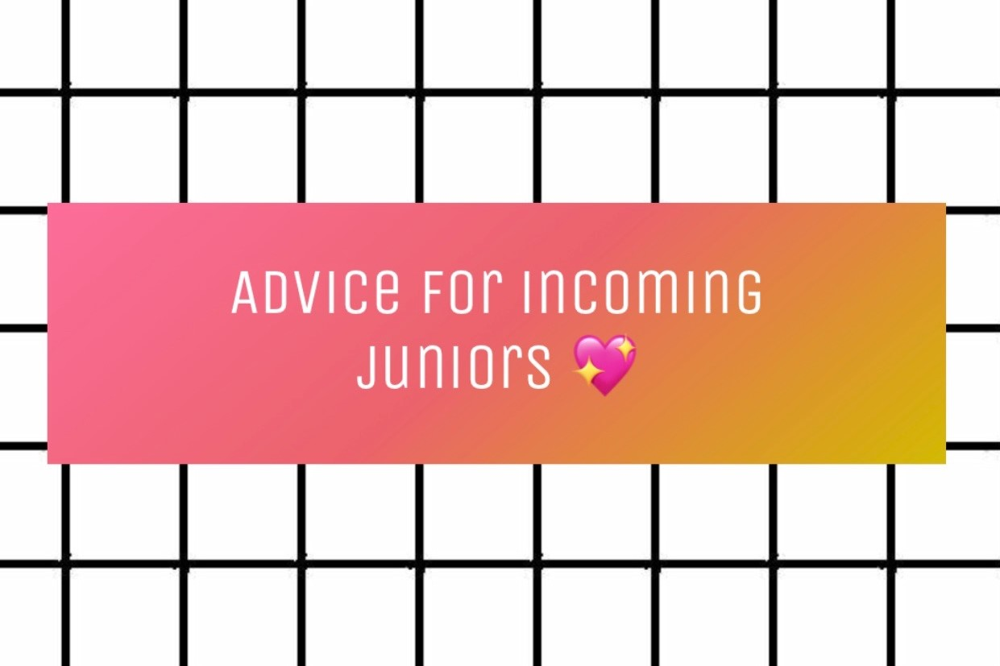

A High School Survival Guide
Welcome to Q and Mel's High School Survial Guide! Here you will find tips, tricks and secrets to survive highschool. Please be aware that these tips are based on our experinces and other people therefore may not work for everybody. Press the stickys to start and enjoy!
About Us
Qiana Pierre
Melanie Narvaez
Freshman
Curriculum Advice
Sophomore
Curriculum Advice
General Advice
Junior
Curriculum Advice
General Advice
Seniors
Curriculum /General Advice
Resources
Apps
Volunteer
- Hospital
- Libray
- Animal shelter
- Non-Profit organization
- Ask your teachers if they need an extra hand after school
- Summer camps
- National Parks
- YMCA
- Habitat for Humanity
- Retirement homes
- Beach clean ups
- Community clean ups
Stress relief
- Listen to music
- Stress balls!!!
- Watch funny videos
The school year can get pretty stressful so here some ways to reduce stress.
Jobs ages 16+
- Buffalo Wild wings
- Auntie Anne’s
- Dollar Tree
- CVS Health
- Jimmy John’s
- Chipotle
- Journeys
- More